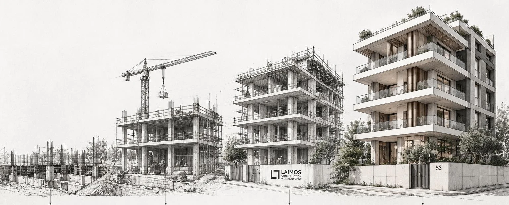
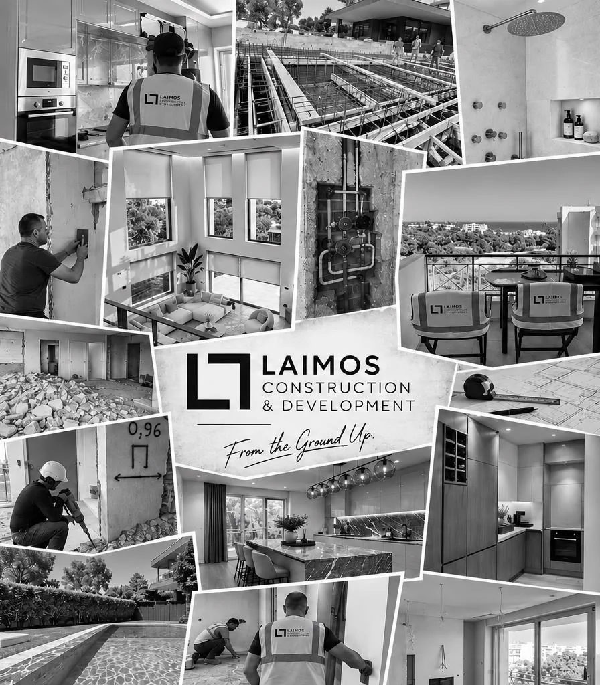

From the ground up.
Vision · Planning · Construction · DeliveryΌραμα · Σχεδιασμός · Κατασκευή · Παράδοση

- FoundationsΘεμελίωση
- StructureΣκελετός
- Shell completedΚέλυφος
- CompletedΟλοκλήρωση
Who we areΠοιοι είμαστε
People. Experience. Results.Άνθρωποι. Εμπειρία. Αποτέλεσμα.
We are a dedicated team delivering high-end construction and renovation projects with a focus on precision, quality and attention to detail. From the first site decision to final delivery, we manage every stage of the process, coordinating construction, technical decisions, specialist trades and bespoke fabrication under one consistent standard.
Είμαστε μια ομάδα αφοσιωμένη στην κατασκευή και την ανακαίνιση έργων υψηλών προδιαγραφών, με έμφαση στην ακρίβεια, την ποιότητα και τη λεπτομέρεια. Από την έναρξη των εργασιών έως την τελική παράδοση, αναλαμβάνουμε και συντονίζουμε κάθε στάδιο του έργου: τις οικοδομικές εργασίες, τις τεχνικές αποφάσεις, τα εξειδικευμένα συνεργεία και τις ειδικές κατασκευές, με ενιαία πρότυπα ποιότητας.
Established four years ago and backed by over a decade of industry experience, our team has delivered more than 30 renovation projects in recent years. Much of our growth has come through client referrals and word of mouth, a reflection of the trust we build through our work. Our clients' feedback and references are available upon request.
Η εταιρεία ιδρύθηκε πριν από τέσσερα χρόνια, με περισσότερα από δέκα χρόνια εμπειρίας στον κλάδο. Τα τελευταία χρόνια έχουμε ολοκληρώσει περισσότερες από 30 ανακαινίσεις. Μεγάλο μέρος της ανάπτυξής μας οφείλεται σε πελάτες που μας σύστησαν σε άλλους, κάτι που δείχνει την εμπιστοσύνη που χτίζουμε με τη δουλειά μας. Οι κριτικές των πελατών μας είναι διαθέσιμες σε όποιον τις ζητήσει.
- 4
- years as Laimos Construction & Developmentχρόνια ως Laimos Construction & Development
- 10+
- years of industry experienceχρόνια εμπειρίας στον κλάδο
- 30+
- renovations delivered in recent yearsανακαινίσεις τα τελευταία χρόνια

One team. One standard.Μία ομάδα. Ένα πρότυπο.
-
New builds & developmentΝέες κατασκευές & ανάπτυξη ακινήτων
From permit to keys.Από την άδεια έως τα κλειδιά.
Residential buildings taken from the first pour to handover, including our own developments.
Κτίρια κατοικιών από την πρώτη σκυροδέτηση έως την παράδοση, μαζί με δικές μας αναπτύξεις.
-
RenovationsΑνακαινίσεις
Existing homes, rethought.Υπάρχοντα σπίτια, με νέα ματιά.
Layout, services and finishes run as one project, by one team, to one schedule.
Διαρρύθμιση, εγκαταστάσεις και τελειώματα ως ένα έργο, από μία ομάδα, σε ένα χρονοδιάγραμμα.
-
Interiors & custom joineryΕσωτερικοί χώροι & ειδικές ξυλουργικές
Made for the room.Φτιαγμένα για τον χώρο.
Kitchens, wardrobes and bathrooms built to measure, with the lighting designed in from the start.
Κουζίνες, ντουλάπες και λουτρά στα μέτρα του χώρου, με τον φωτισμό σχεδιασμένο από την αρχή.
-
Pools & outdoor spacesΠισίνες & εξωτερικοί χώροι
The house, continued outside.Το σπίτι συνεχίζεται έξω.
Pools, gardens and entrances finished to the same standard as the interior.
Πισίνες, κήποι και είσοδοι με την ίδια ποιότητα κατασκευής με το εσωτερικό.
Custom kitchens.Κουζίνες κατά παραγγελία.
Joinery / Stone / LightingΞυλουργική / Πέτρα / Φωτισμός
Spaces that feel effortless.Χώροι που μοιάζουν αβίαστοι.
Interiors & exteriorsΕσωτερικοί & εξωτερικοί χώροι
Bathrooms, resolved as architecture.Λουτρά, λυμένα ως αρχιτεκτονική.
Stone / Metal / LightΠέτρα / Μέταλλο / Φως
Bespoke woodwork.Ειδικές ξυλουργικές κατασκευές.
Custom joineryΚατά παραγγελία
Indoor to outdoor.Από μέσα προς τα έξω.
Landscape / PoolsΚήποι / Πισίνες
Kyriakou Residences
New build / Under construction / MarousiΝέα κατασκευή / Υπό ανέγερση / Μαρούσι
A penthouse maisonette on the third floor and attic of a new building at Panagi Kyriakou 12, in the centre of Marousi.
Ρετιρέ μεζονέτα στον Γ΄ όροφο και τη σοφίτα νεόδμητης οικοδομής, στην οδό Παναγή Κυριακού 12, στο κέντρο του Αμαρουσίου.
- 101.76 m²101,76 τ.μ.
- main living areaκύριοι χώροι
- 3
- bedroomsυπνοδωμάτια
- 2
- bathroomsλουτρά
- ≈ 30 m²≈ 30 τ.μ.
- private roof terraceδώμα αποκλειστικής χρήσης
The homeΤο ακίνητο
Two levels joined by an internal stair. The third floor holds an open living and dining room with kitchen, one bedroom, a bathroom and a store room. The attic has two more bedrooms, a second bathroom and direct access to the roof terrace.
Δύο επίπεδα με εσωτερική σκάλα. Στον Γ΄ όροφο ο ενιαίος χώρος ημέρας με ανοιχτή κουζίνα, ένα υπνοδωμάτιο, λουτρό και εσωτερική αποθήκη. Στη σοφίτα δύο ακόμη υπνοδωμάτια, δεύτερο λουτρό και άμεση έξοδος στο δώμα.
Balconies on two sides (13.43 m²), semi-outdoor space (10.66 m²), a covered parking space on the pilotis and a basement store room are included.
Περιλαμβάνονται εξώστες σε δύο πλευρές (13,43 τ.μ.), ημιυπαίθριοι χώροι (10,66 τ.μ.), στεγασμένη θέση στάθμευσης στην pilotis και αποθήκη στο υπόγειο.
LocationΗ θέση
- 200 m from Marousi station on Line 1, a 3-minute walk
- 500 m from Syngrou Forest
- Next to the Marousi shopping streets, schools and services
- Quick access to Kifisias Avenue and Attiki Odos
- 200 μ. από τον σταθμό «Μαρούσι» της Γραμμής 1, 3 λεπτά με τα πόδια
- 500 μ. από το Δάσος Συγγρού
- Δίπλα στην αγορά του Αμαρουσίου, σε σχολεία και υπηρεσίες
- Άμεση πρόσβαση στη Λ. Κηφισίας και στην Αττική Οδό
SpecificationΠροδιαγραφές
- External thermal insulation on the whole envelope
- Thermally broken aluminium frames with energy glazing
- Underfloor heating with a heat pump
- Lift and step-free access
- Architecture and structure by vandoros + partners
- Εξωτερική θερμοπρόσοψη σε όλο το κέλυφος
- Κουφώματα αλουμινίου με θερμοδιακοπή και ενεργειακούς υαλοπίνακες
- Ενδοδαπέδια θέρμανση με αντλία θερμότητας
- Ανελκυστήρας και πρόσβαση ΑμεΑ
- Αρχιτεκτονική και στατική μελέτη: vandoros + partners
Construction stageΣτάδιο κατασκευής
- Permit & foundationΆδεια & θεμελίωσηCompletedΟλοκληρωμένο
- Structural frameΦέρων οργανισμόςConcrete 80% completeΣκυροδετήσεις κατά 80%
- MasonryΤοιχοποιίεςNextΕπόμενο
- Services & finishesΗ/Μ & τελειώματαInstallations, insulation, framesΕγκαταστάσεις, θερμοπρόσοψη, κουφώματα
- HandoverΠαράδοσηIn 9 to 12 monthsΣε 9 έως 12 μήνες
Status as of September 2026.
Κατάσταση Σεπτεμβρίου 2026.